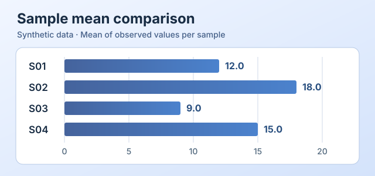
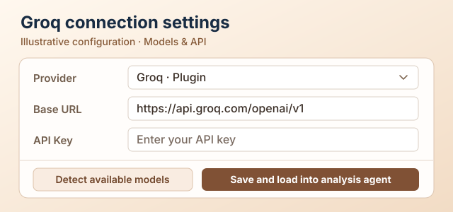

Zotero-style research chat
Read papers alongside your analysis. Use an existing MiniMax or other model connection to turn a question into a research note.
Add research chat, analysis methods and result views to your workspace.
Read papers alongside your analysis. Use an existing MiniMax or other model connection to turn a question into a research note.

Calculate observed and missing values, mean, standard deviation and coefficient of variation for each sample.

Compare sample means from an existing result table in a bar chart.

Add Groq to the EMP model selector and test the connection with your own API key.
No matching plugins. Try another keyword or category.